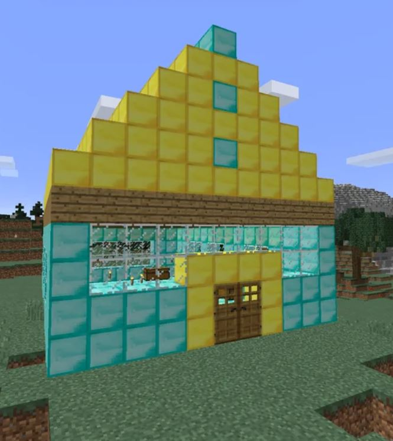

Xavier's Minecraft Lore
Humble Beginnings
My first game ever was Minecraft on the Xbox 360. I was around 6 years old

I remember being so amazed by the Minecraft and the endless possibilities it offered. I would spend hours exploring, building, and creating in that blocky world. It was a magical experience that sparked my love for gaming and creativity.
My First House

Even though this isn't my actual first house
I wanted to include this picture because it reminds me of the first house I built in Minecraft.
Growing Up
As I grew older, my love for Minecraft only deepened. I started to play Java Edition on the PC
I started to join popular servers and play with people I met, ones I talk to this day.

I also started to get into Minecraft PvP, which is a competitive aspect of the game where players fight against each other using various weapons and strategies. I found it thrilling and challenging, and it added a whole new dimension to my Minecraft experience.